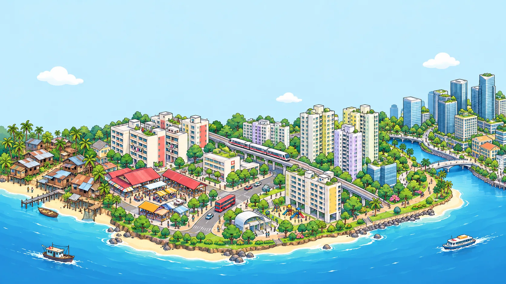
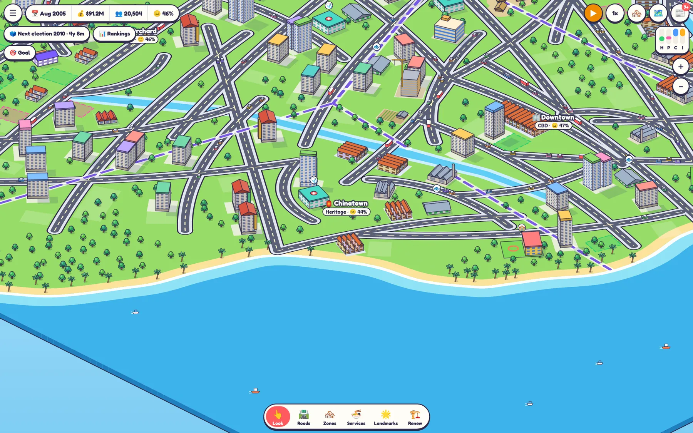
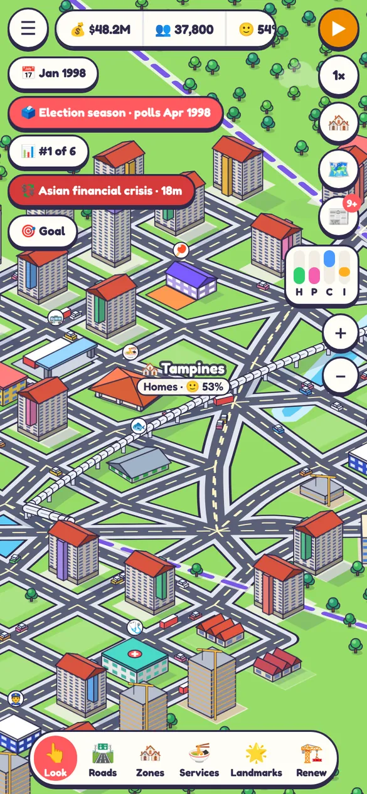
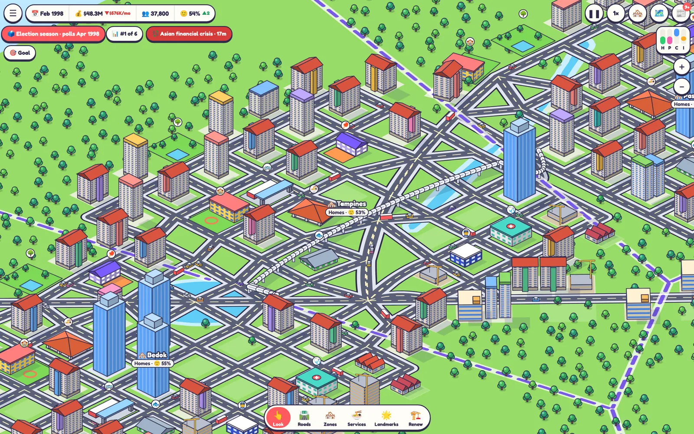
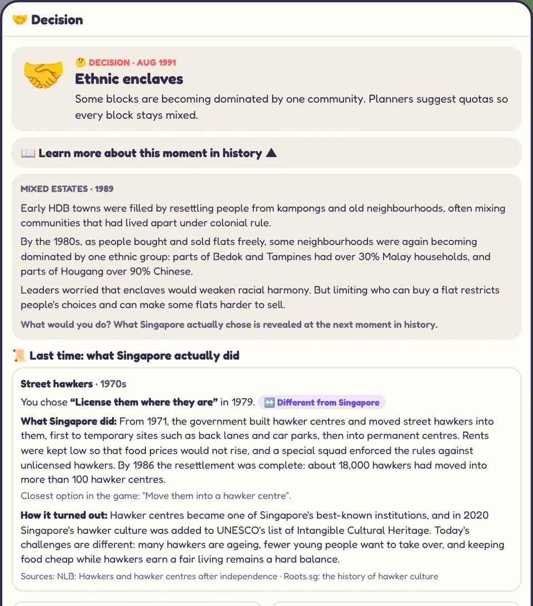
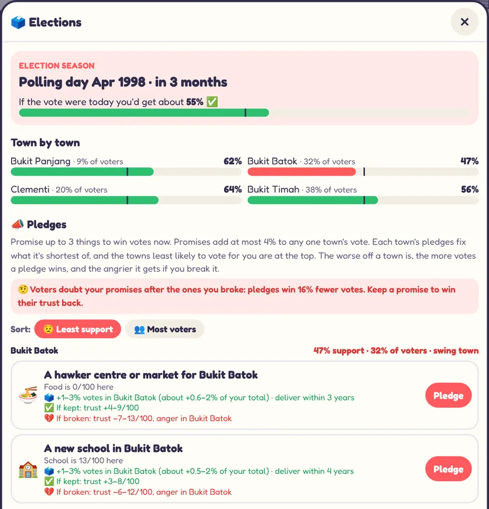
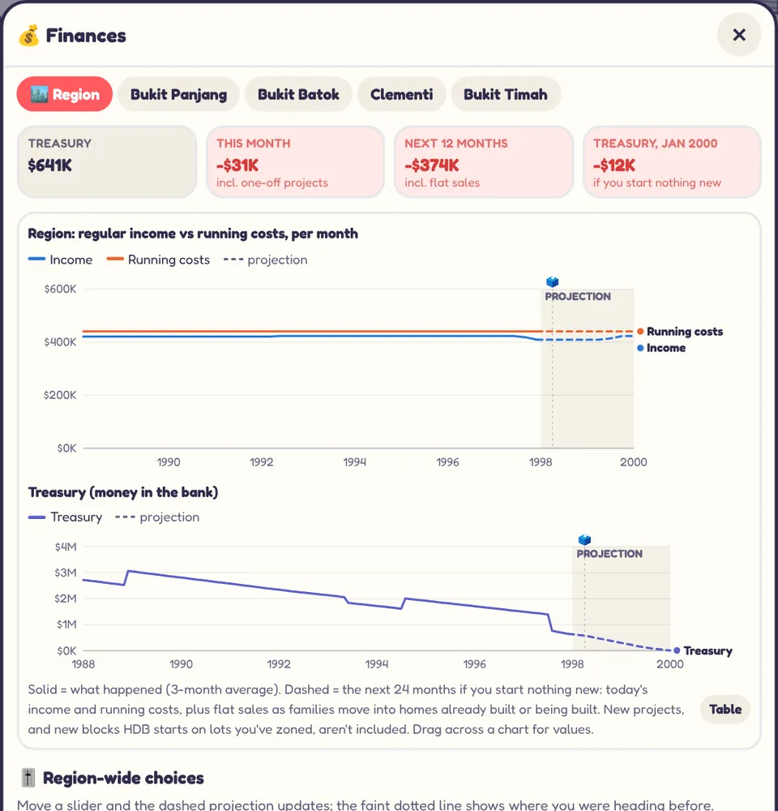
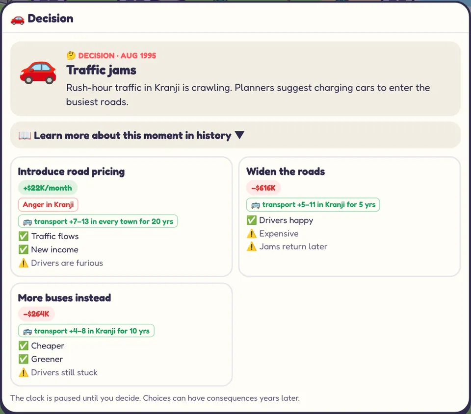

Tampines / Changi
Kampongs and coconut groves by the sea. Build new towns and make room for an airport.
Free browser game · Singapore, 1965
Plan one region of Singapore through a century of growth, crises and elections. Lay the roads, zone the HDB estates, open hawker centres and MRT lines, balance the budget, and win the vote every six years.
Play now, it's free


Every flat, every hawker centre and every dollar is a choice. Make yours, then see what Singapore really did.
What you'll do
Four jobs, all at once, just like a real town planner, council and treasurer rolled into one.
Draw curved roads and zone the land beside them. Families, shops and factories move in by themselves. Your job is to put the right things in the right places.

Real crises arrive on their real dates, and real policy debates land on your desk. Read the background, make your call, and play on.

Every town has its own needs and its own voice. Residents tell you what is missing, and every six years they tell you at the ballot box.

Flats are sold to families, property tax and business tax come in, and the central government sends grants. Every service you open costs money to run, for years.

Road pricing clears the jams and earns money, but drivers are furious. Wider roads please everyone until the jams return. Every card shows what each choice is likely to do before you pick.

Real crises, real dates
Each one hits your jobs, your budget or your residents' health. How hard depends on what you built before it arrived. Play past today and five imagined crises are waiting in the future.
Six regions
Kampongs and coconut groves by the sea. Build new towns and make room for an airport.
The industrial heartland. Balance jobs against the smoke drifting into homes.
The hardest start: little free land, crowded shophouses and heritage to protect.
A tourism region where Sentosa runs its own visitor economy.
The gateway to Malaysia, with trade flowing across the Causeway.
A protected hill, famous schools and campuses, and landed estates that want to stay as they are.
How it plays
01
One of six regions, then a mode: Campaign, Sandbox, or a 100 or 200 year legacy judged decade by decade against rival mayors.
02
Time runs month by month. Pause whenever you like to plan, build and answer the decisions that arrive.
03
Every six years your towns vote. On Normal and Hard, lose an election or run too deep into debt and your term is over.
For the classroom
Lion City Mayor is written for secondary school readers. It gives a class something concrete to discuss: why Singapore made the choices it did, and what it cost.
History notes give the background but hold back what happened, so students commit to a choice first.
Every option shows its likely effects on money, needs, trust and mood, so the debate is about priorities, not guesses.
It runs in the browser on school laptops and phones. No accounts, no ads, and nothing leaves the device.
FAQ
Yes. It runs in your browser with no download, no account and no ads.
Yes, in the browser you are playing on. Each region keeps its own campaign, and you can go back to just after your last election win. Clearing your browser's site data erases the saves.
Yes. Pinch to zoom, drag to move, and tap to build. A bigger screen helps when you are drawing long roads.
The history notes describe real events and policies and name their sources, such as the National Library's Infopedia. The game itself is a simplified model, and the role of mayor here is fictional: it combines planning, housing and town council powers. Singapore's real mayors lead Community Development Councils.
Easy gives you a bigger budget, and you can't lose an election. Normal asks you to win every election. Hard has a tight budget and more critical voters. Sandbox has no elections and no bankruptcy.
On Normal and Hard, yes: lose an election, or let the debt run past your limit, and a new mayor takes over. In the legacy modes your final score compares your region with the others, decade by decade.
Anyone who likes city builders, and anyone curious about how Singapore was built. The text is written for secondary school students, so it works well in a history or social studies lesson too.
Pick a region, draw your first road, and see how far your town can go.
Play now, it's free